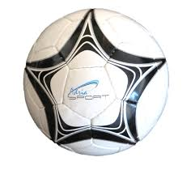

Dobrodosli u Nogometni Katalog

Ovdje se mogu naci osnovni podaci o igracima i klubovima. Igraci su prikazani pomocu JSON formata, a klubovi pomocu XML-a.
Na stranici Igraci nalaze se poznati nogometaši iz hrvatske reprezentacije, a na stranici Klubovi europski klubovi u kojima igraju.
O projektu
Igraci su u JSON formatu, a klubovi u XML-u. JavaScript cita te podatke i prikazuje ih na stranici, bez potrebe za serverom.
Na stranici Statistika vidi se koliko igraca ima po poziciji i koliko klubova je u svakoj ligi.